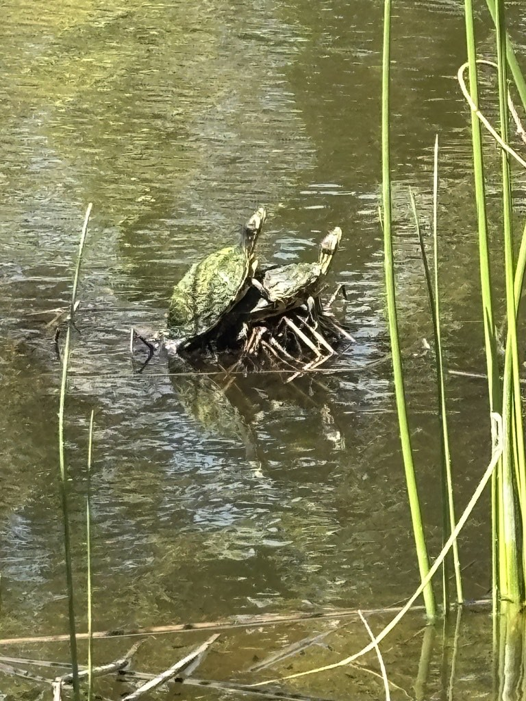

- The pond slider is the classic basking turtle you see lined up on logs, sliding into the water at the first hint of trouble — which is how it got its name.
- Two kinds turn up in Florida, and telling them apart matters: the yellow-bellied slider, with a yellow patch behind the eye, is native here; the red-eared slider, with a red stripe behind the eye, is not.
- The red-eared slider is one of the most widely released pet turtles in the world, and where people dump unwanted pets, it competes with and even interbreeds with native turtles.
- Young sliders eat mostly small animals; as they grow, they shift toward a diet of aquatic plants.
Smooth, oval, olive-green to brown with yellow markings, darkening with age.
A yellow patch behind the eye (yellow-bellied) or a red stripe behind the eye (red-eared) — the key to telling the two apart.
Dark with yellow stripes.
Females larger than males.
Essentially silent.
A medium turtle basking on a log, with yellow stripes on the head and neck. Check just behind the eye: a yellow blotch points to the native yellow-bellied slider; a red stripe points to the introduced red-eared slider.
Omnivorous. Young sliders eat mostly insects, tadpoles, snails, and small fish; adults shift toward aquatic plants and algae.
Basking on logs, banks, and debris at the ponds on sunny days, often several together. Look behind the eye to tell native from introduced.
Year-round resident. Most visible basking on warm, sunny days.
Watch from a distance, and never release a pet turtle into the park or any wild pond — released red-eared sliders harm native turtles. Do not handle or feed them.
- © flowerchild1969 (CC-BY-NC), via iNaturalist